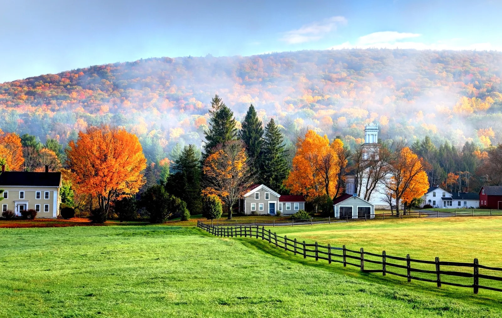
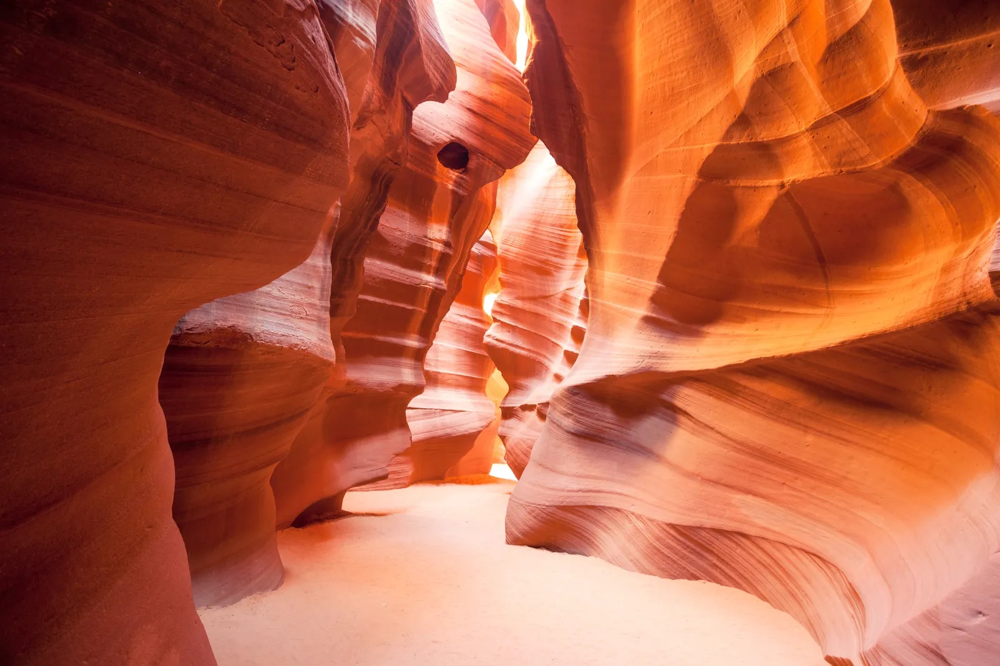
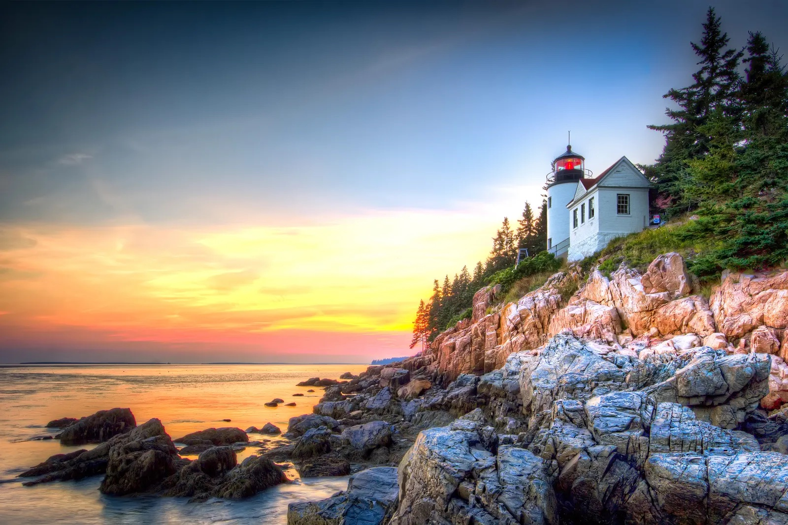
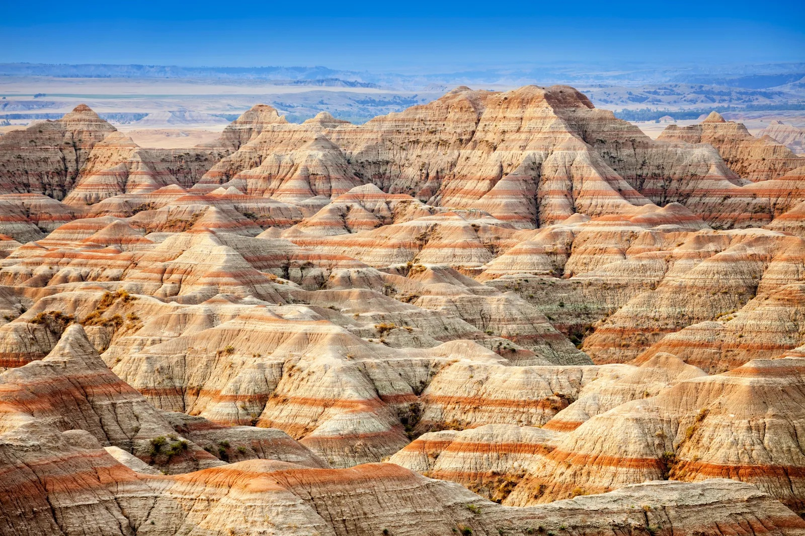
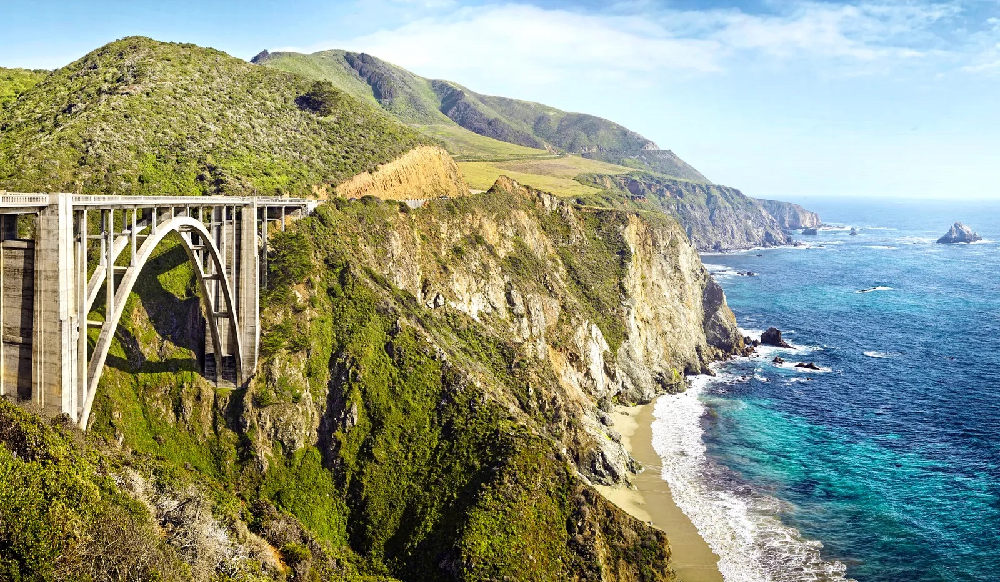
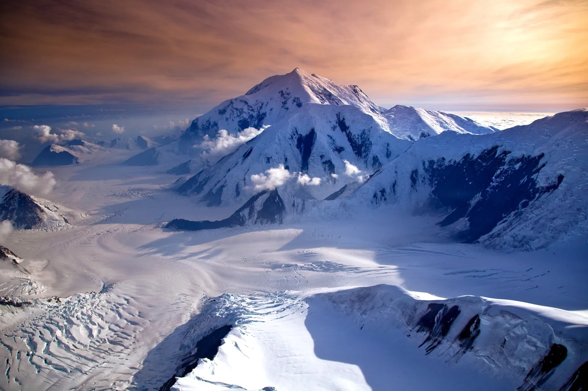
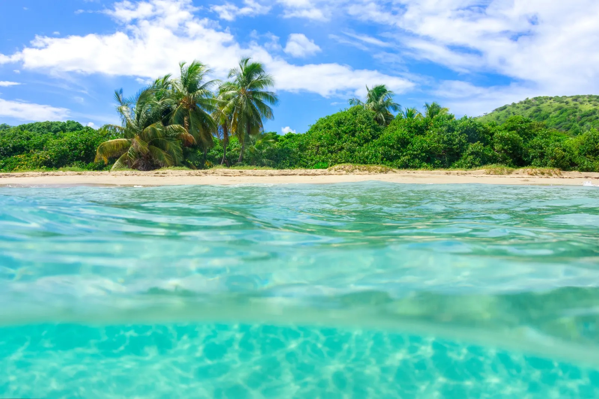

You could spend a lifetime exploring the sites of the United States, all as beautiful as they are diverse. Hawaii's vertical Na'Pali Coast is easily one of the most beautiful coastlines on the planet. Denali National Park in Alaska is worth braving the extreme low temperatures. And perhaps you've heard of a charming little tourist destination known as the Grand Canyon? Whether you're looking for nature's greatest hits or hidden gems that take a little digging to find, here are (in no particular order) 50 of the most beautiful places in America.
Our travel guides aim to give you the best and most up to date information on the major travel destinations around the United States.
Here you will find recommendations on places to stay, things to see and do. It doesn’t matter what type of vacation you are going on – backpacking trip, two-week holiday, round-the-world-trip, or a family vacation.
These destination guides will give you all the information you need for your trip so you can travel better, longer, and cheaper. I know how bad it is to get outdated information in print guidebooks. I’ve been the victim of it too many times!